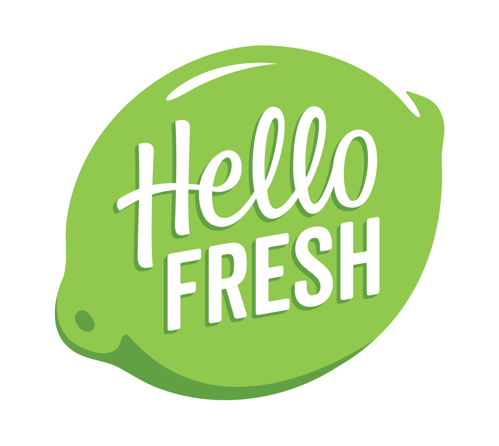

|  |
HelloFresh
-
Product Management – Product owner of several new product roll-outs. Possessed full responsibility of product lifecycle, from inception to actualization. Responsibilities included concept ideation, KPI scoping and measurement strategy, competitor research, market sizing, project management and customer study design. 100% on-time launch rate resulted in lift to overall customer retention and LTV.
-
Product Strategy Analysis – Created multiple potential product pitches to CEO using market sizing analyses and industry research to inform quarterly new product and sales channel roadmap.
-
Ongoing Performance Analysis – Analyzed weekly customer retention, demographics and sales data for product post-launch reviews, extracting data and creating statistical models with Python and translating into actionable insights for quarterly presentations to C-Suite. Deliverable highlights included recommendation of retargeting marketing campaign to higher performing demographic for a previously underperforming product.
-
Packaging Optimization – Created Python script to forecast national weather patterns and general model to optimize product pack-out (amount of insulation/coolant required as a variable of temperature). Led to annual savings of over $1.5MM.
-
Packaging R and D – Optimized packaging design of all product lines. Led R and D of packaging through self-learning and prototype testing. Reduced overall category cost through re-negotiation of pricing with vendors and reducing packaging material volume, leading to savings of over $10MM annually.
-
Institutional Transformation – Led holistic company-wide review of sustainability and product sourcing. Managed cross-departmental program that included: evaluation of procurement standards related to animal welfare of protein and dairy goods, collaboration with marketing to develop collateral for progressive branding, emphasis on sustainable (non-landfill, non-virgin material) packaging, development of production tool to track inefficient use of goods. Program resulted in wide-scale improvements in visibility and accountability of supply chain.
-
Process Redesign – Established new processes of receiving and QA workflows for production supply chain. Resulted in >10% increase in QA yields of produce being accepted at our production facilities.
-
Customer Feedback Reporting Tools – Created various tools to improve internal visibility of weekly product performance of quality/customer complaints. Developed management-level reports and optimized customer service processes to increase accuracy of customer complaint data. Built data aggregation tools using MS Excel and MS Access to join multiple data sources to create previously unobtainable insights. Led to over 3% reduction in overall customer complaints.
|